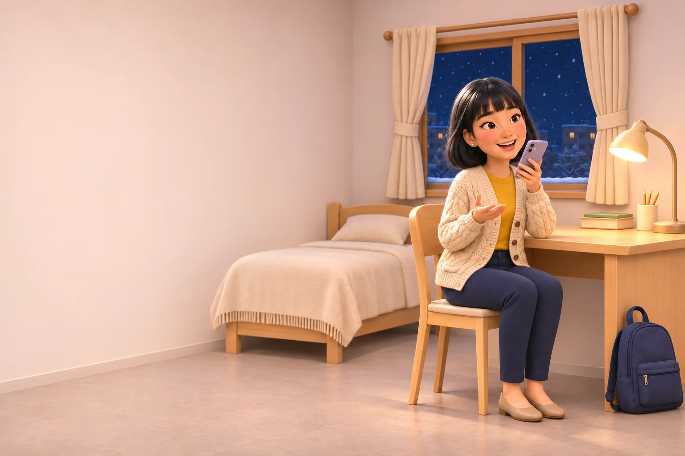
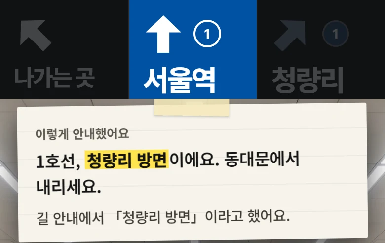
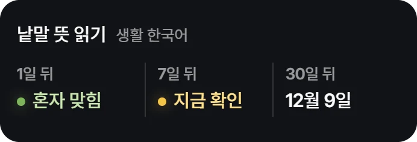
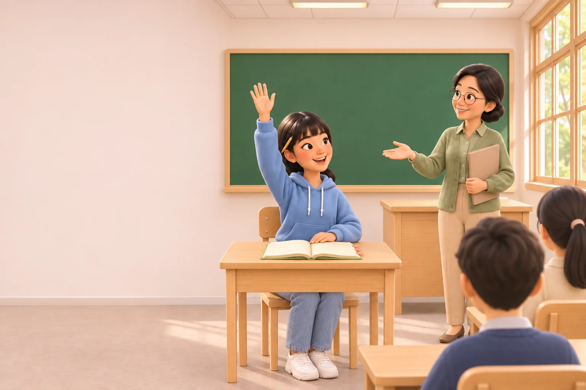

- 말해야장면이 넘어갑니다
- 1 · 7 · 30일뒤에 처음 보는 문제로 다시
- 하나만고칠 곳을 짚습니다
- K드라마 상황극
말해야
장면이 넘어갑니다.상대가 먼저 말을 걸고, 소리 내어 대답해야 다음 장면이 열립니다.
지금 됩니다권태오 선배저기, 혹시 신입생이에요?
나말할 차례입니다
- 아틀라스 엔진
외운 것은
실력으로 치지 않습니다.틀린 말은 1일, 7일, 30일 뒤에 다시 묻습니다. 그때 혼자 해내야 실력입니다.
지금 됩니다- 1일 뒤
- 7일 뒤
- 30일 뒤
처음 보는 문제로 다시 묻습니다 - 코치 노트
고칠 곳은
하나만 짚습니다.말하기 앱 리뷰 3,519건을 분류해 얻은 답입니다. 확신할 때만, 하나만.
어제 친구를
만나요만났어요예시입니다
교육 철학
AI에게 “이건 맞고 이건 틀렸어, 다시 해 봐”라고 말하려면 내 생각이 먼저 있어야 합니다.
누구나 AI로 많은 것을 빠르게 만드는 시대입니다. 그래서 답을 고르고 고치는 힘이 필요합니다.
AI 시대에 필요한 세 가지
- 01
스스로 정한다
AI가 낸 답에서 무엇을 남기고 무엇을 바꿀지, 다음에 무엇에 도전할지.판단 · 주도성
- 02
직접 부딪힌다
처음 보는 상황에서 혼자 말해 보고, 내놓고, 평가도 받아 봅니다.적응력 · 경험
- 03
함께 끝낸다
생각이 부딪혀도 호흡을 맞춰 끝까지 완성합니다.협응력
기술로 아낀 시간은, 사람이 직접 느끼고 경험하고 배우는 데 씁니다. 그렇게 공부한 학생이 리더가 되도록 돕는 것이 최종 목표입니다.
양유호 · SYNK 창업자준비한 것 · SYNK WORLD 앱
매일의 연습은
앱이 고릅니다
짧은 진단으로 내 위치부터 봅니다. 듣기, 읽기, 쓰기 첨삭, 말하기 가운데 오늘 무엇을 할지는 내 기록을 보고 정합니다.
- 오늘 할 것들어오면 튜터가 오늘 무엇부터 할지 먼저 말해 줍니다.
- 틀린 까닭틀리면 왜 틀렸는지 그 자리에서 알려 줍니다.
- TOPIK까지듣기와 읽기, 쓰기 51~54번 첨삭, 말하기 시험 형식을 연습합니다.
- 세 언어화면은 한국어, 영어, 몽골어로 봅니다.
지금 됩니다SYNK WORLD 열기



어디까지 왔나
지금 되는 것과 준비 중인 것
지금 됩니다
- K드라마 상황극 1화 「개강 첫날」 말하기
- 틀린 대사를 며칠 뒤 다시 만나기
- TOPIK I 짧은 진단과 이번 주 연습 계획
- TOPIK 듣기 · 읽기, 쓰기 51~54번 첨삭
준비 중
- TOPIK 4급 8주 온라인 반 · 관심 등록 중
- 상황극 일터 편과 아이돌 연습생 편
- 교재 「시냅스」 여덟 권 출간 · 원고 완성
상황극의 인물과 학교는 지어낸 것입니다. 쓰기 첨삭은 로그인하면 하루 세 번 됩니다. 합격을 보장하지 않습니다.
